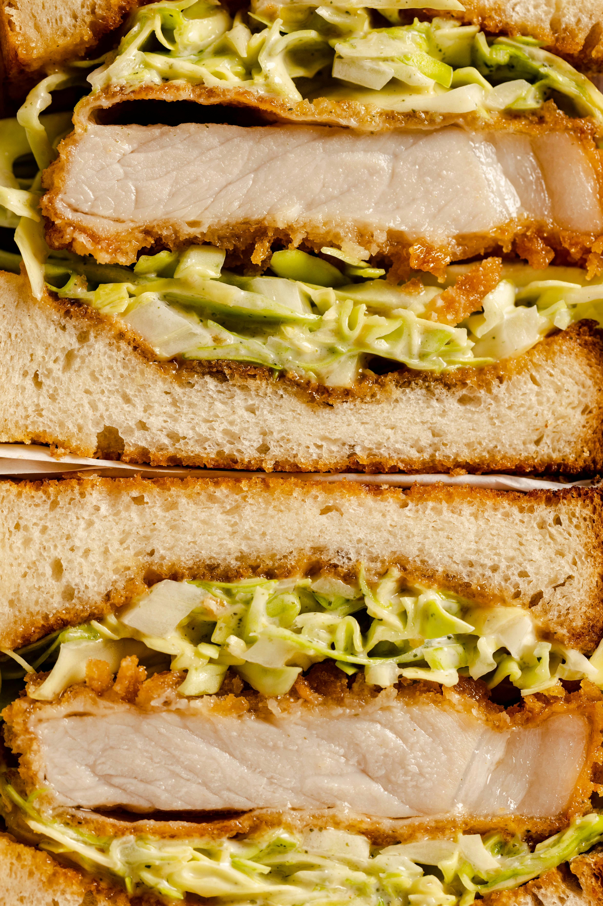
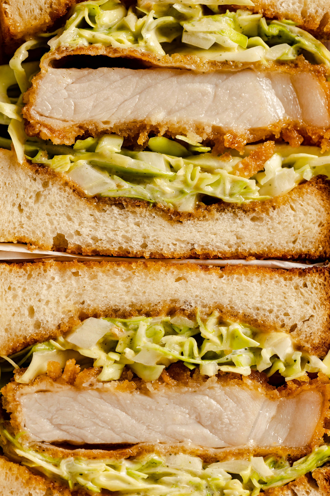
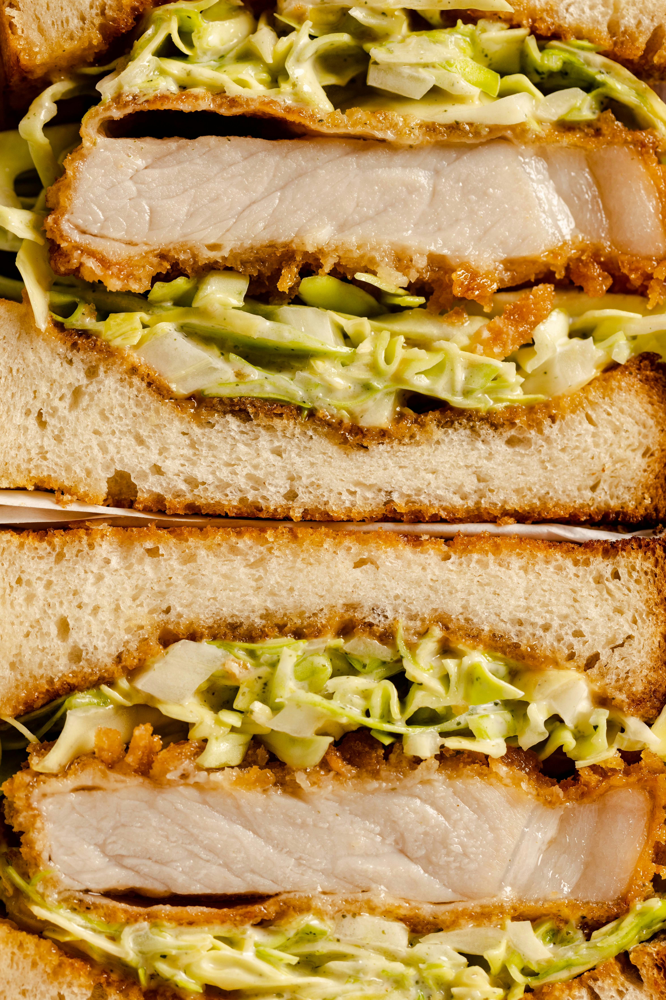

Home
Prosjekt 1
Prosjekt 2
Prosjekt 3
Prosjekt 4
Home page
Part 1
Welcome to this experimental page that will inevitably change to become something completely unrecognizeable.
This is text outside the first section and linebreak between them seems to be just jolly good.
This is a div after the first section

 
